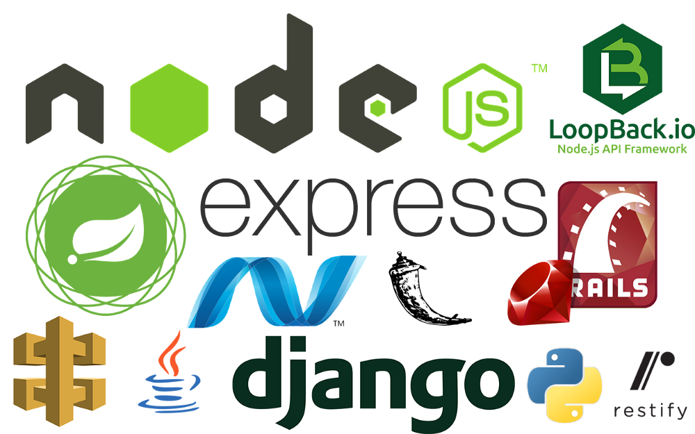
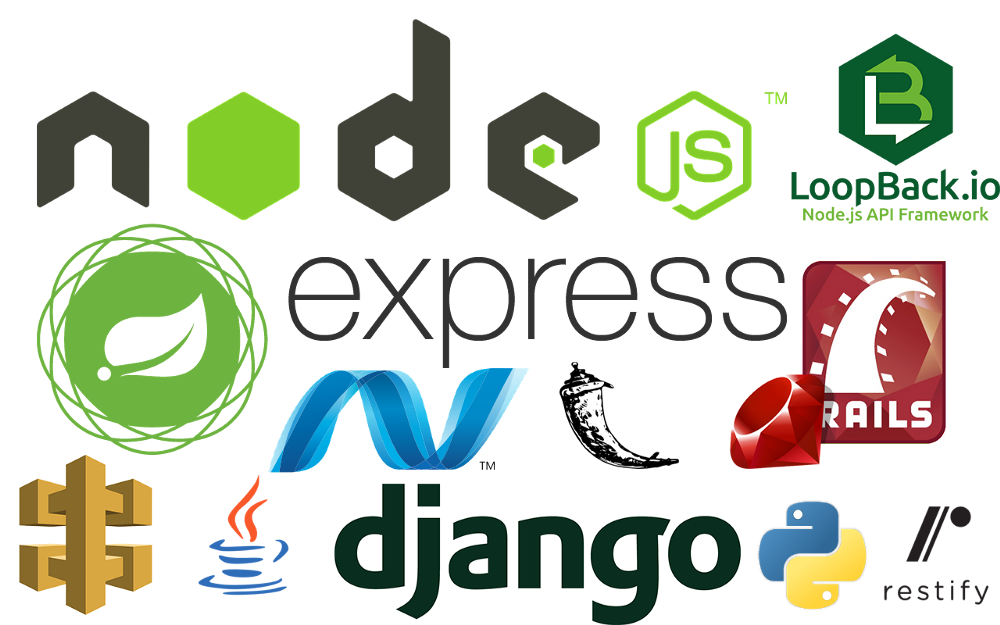

Backend
The 11 Best Backend Frameworks - 2023
Spring Programming Language Java
What is Spring Framework? The Spring Framework helps Java developers quickly develop complex, dynamic web applications. Spring is often referred to as a “framework of frameworks.” This is due to the varying Spring modules that you can pick and choose to use, such as Spring Web, Spring Security, Spring Data, Spring Cache, and so on.
Part of the framework, Spring Boot, makes stand-alone web applications and microservices far more efficient to code by minimizing time spent on boilerplate code and configurations. Spring Boot also supports many different Java Virtuation Machine (JVM) technologies, such as Kotlin, Groovy, and Scala.
Spring Boot is considered an “opinionated” framework, meaning that it favors certain design patterns in order to make development within those patterns more efficient. In other words, Spring Boot decides the configuration defaults and the packages to install based on the dependencies you include in your project requirement. This can save time and headaches in development.
Django Programming Language Python
What is Django? Django is a high-level web framework that enables efficient development of fast, secure web applications in Python. Django uses a paradigm called model-view-template (MVT), which is a variation on the standard model-view-controller (MVC) pattern. Django's MVT paradigm helps you keep your code logically organized into layers. The Django framework handles many of the controller aspects of the model, leaving the specification of data view and presentation templates to you.
Django is a batteries-included framework, meaning it includes most libraries and tools needed to build common web applications out of the box. Django's philosophy is to manage the data model in one location, namely your models.py file. Once the database is created and a connection established, everything should be done in Django, including schema updates and data migration, to avoid conflicts later.
Laravel Programming Language PHP
What is Laravel? Laravel is a cross-platform PHP framework that helps streamline the development of web applications using the model-view-controller (MVC) architectural pattern. One of the original server-side web scripting languages, PHP has been around almost as long as the web, and Laravel is built atop PHP. While PHP no longer tops the list of the most in-demand programming languages, it persists based on legacy code, as it is used in nearly 80% of all websites
Flask Programming Language Python
What is Flask? Flask is a simple, lightweight, and modular Python web framework that enables the developer to utilize third-party tools and libraries only as needed. While Django utilizes a “batteries included” approach, Flask keeps the core of a web application simple and extensible.
Ruby on Rails Programming Language Ruby
What is Ruby on Rails? Ruby on Rails is a web framework that enables Ruby developers to quickly build robust web applications with relative ease. Also referred to as “Rails,” Ruby on Rails uses the MVC paradigm, and provides default structures for a database, a web service, and web pages.
Express.js Programming Language JavaScript
What is Express.js? Express.js is a minimal framework for building fast responsive web applications, mobile applications and APIs. Express runs on top of the Node.js environment, and makes creating Node.js applications more efficient. Express.js is an unopinionated framework, which allows developers to structure their code to their personal preference instead of forcing a pre-defined code structure.
Millions of developers around the world use JavaScript for a variety of web development tasks. Originally created to provide interactivity for static web pages and run only in the browser, JavaScript can now also run backend code using the cross-platform, open-source server environment Node.js. This allows JavaScript to run outside of the browser, and has rich tooling available thanks to its ecosystem of helpful frameworks, including ExpressJS, NestJS, and MeteorJS - all of which make this list.
Next.js Programming Language JavaScript
What is Next.js? Next.js is a framework that allows for fast and efficient development of static website using React.js. Next.js is considered a minimalistic framework, while still containing all the necessary features to create a high performing application in React.
ASP.NET Core Programming Language .NET
What is ASP.NET Core? ASP.NET Core is a framework developed by Microsoft for creating applications using .NET. It is the next generation and replacement for the Windows-only versions of its predecessor ASP.NET. ASP.NET Core is an open-source, cross-platform framework that runs on macOS, Linux, and Windows.
NestJS Programming Language JavaScript
What is NestJS? NestJS is a framework for building efficient, scalable web applications in the Node.js environment. NestJS is built on top of ExpressJS, and adds a level of abstraction to bring together concepts such as controllers, providers, and modules. NestJS supports both TypeScript and JavaScript.
Meteor.js Programming Language JavaScript
What is Meteor.js? Meteor.js is written using Node.js, and can be used to build applications for web, iOS, Android, or desktop in Javascript or TypeScript. Meteor offers a full ecosystem to work with, and is known for enabling rapid prototyping and producing cross-platform code. Meteor can also be used with the ReactJS and AngularJS libraries.
Cake PHP Programming Language PHP
What is CakePHP? Another PHP-based framework, CakePHP stresses conventions over configuration. Using an opinionated model-view-controller (MVC) paradigm, CakePHP applications require very little configuration to get started, while still providing the same data and security features as Laravel.
 
